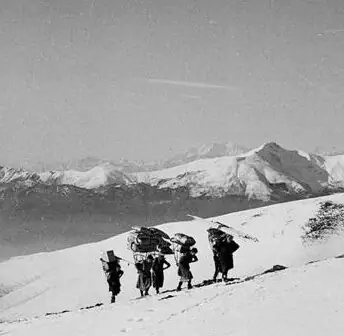

Le sentier des porteuses de skis
Il rappelle les « sherpas » qui portaient les skis des Luganais aisés, arrivés à Bidogno en car postal, de la place de l’église San Barnaba jusqu’à la cabane.
- Longueur
- 4 km
- Montée
- +800 m
- Temps
- 2 h
- Difficulté
- T2